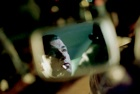

Lama Film


Non prendere impegni stasera
script and direct by : Gianluca Maria Tavarelli
with: Luca Zingaretti, Giorgio Tirabassi, Andrea Renzi,Alessandro Gassman,Valeria MIlillo,Francesca Inaudi, Micaela Ramazzotti, Paola Cortellesi, Valerio Binasco, Donatella Finocchiaro, Michela Cescon, Giuseppe Battiston, Rocco Papaleo, Mimma Lovoi, Daniele Griggio, Susy Laude, Zoe Tavarelli, Giovanni Videntin, Giuseppe Antignani, Gianni Lillo.
production: Taodue film
executive production: Lama Film
script and direct by: Gianluca Maria Tavarelli
fotografy: Roberto Forza
editing: Alessandro Heffler
production designer: Sonia Peng
costum designer: Loredana Buscemi
sound: Remo Ugolinelli
first assistant director: Igor Borghi
music: Luigi Seviroli
country: Italy 2006
genre: Drama
length: 96 min
format: Color 35 mm
USCITA CINEMA: 15/06/2007
Note:
Presented in competition to the 63MA MOSTRA INTERNAZIONALE D'ARTE CINEMATOGRAFICA DI VENEZIA (2006) in the “ORIZZONTI” section.


Forty years old’s stories in crisis that cross, fleeing from the past and its disappointments and this chaotic metropolis full of noise and solitude, seeking refuge in casual and unpretentious companies, to compensate for the lack of love. When he discovers he has an incurable disease, Peter understands that now is the time when it can no longer come to terms with his loneliness. He tries to comfort and help to Cynthia, her friend forever. Right next to her, so fragile, but so sure of his choices, Peter will wage a struggle against the evil that is devouring. Andrew, a brillant professional man, knows Veronica, a younger girl than him who does the job in a large shopping center. The two are very different and Veronica live in a world unknown to Andrew, but, unlike him, she knows herself and still be real and deep feelings. Beside him, Andrew will know the meaning of love again and be able to finally leave his wife. Alexander is afraid of everything, even to live, and Irene, his wife is no longer able to cope every day with a man who cannot look outside himself. Nanni is a man alone and when reunited with Paula, a former girlfriend who is getting married, he took refuge in his arms to find the serenity that no longer. But it is too late for those who have lost long ago. George and Mariella live closed in their bedroom, without the courage to admit their mistakes and trying every day to start again. Finally, there Iole, pending love, will not only learn but also to look for it.